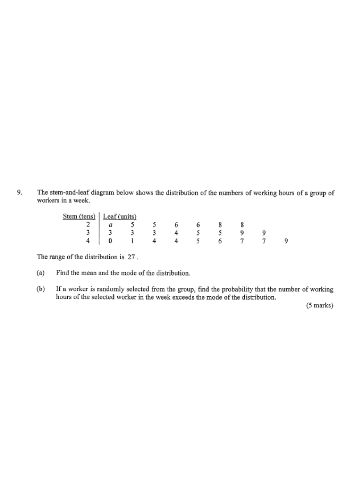

Q9 Question 5 marks
The stem-and-leaf diagram below shows the distribution of the numbers of working hours of a group of workers in a week.
| Stem (tens) | Leaf (units) |
|---|---|
| 2 | a 5 5 6 6 8 8 |
| 3 | 3 3 3 4 5 5 9 9 |
| 4 | 0 1 4 4 5 6 7 7 9 |
The range of the distribution is 27.
(a) Find the mean and the mode of the distribution. 3 marks
(b) If a worker is randomly selected from the group, find the probability that the number of working hours of the selected worker in the week exceeds the mode of the distribution. 2 marks

(a) Finding \(a\), the Mean and the Mode
Drag the slider to change the unknown leaf \(a\) and watch the range, mean and mode update live. The correct value of \(a\) is forced by the given range of \(27\).
The largest value is \(49\) (stem 4, leaf 9) and the smallest possible value with stem 2 is \(20 + a\) (since \(a\) is the smallest leaf in the stem 2 row).
Range \(=27\), so:
\[49-(20+a)=27\] \[49-20-a=27\] \[a=2\]With \(a=2\) the data are:
22, 25, 25, 26, 26, 28, 28,
33, 33, 33, 34, 35, 35, 39, 39,
40, 41, 44, 44, 45, 46, 47, 47, 49
Counting: \(7+8+9=24\) values in total.
Sum all values by grouping by stem:
\[(22+25+25+26+26+28+28) = 180\] \[(33+33+33+34+35+35+39+39) = 281\] \[(40+41+44+44+45+46+47+47+49) = 403\]Total sum \(=180+281+403=864\).
\[\text{Mean}=\frac{864}{24}=36\]The mode is the value that occurs most frequently. In the list, \(33\) appears three times — more often than any other value.
(b) Probability of Exceeding the Mode
The diagram below colours every worker whose working hours are greater than \(33\) (the mode) in green; those not exceeding \(33\) stay grey. Toggle the threshold to explore.
From part (a), the mode is \(33\) hours. "Exceeds the mode" means the working hours are strictly greater than \(33\), i.e. \(>33\).
Count all values greater than \(33\):
34, 35, 35, 39, 39,
40, 41, 44, 44, 45, 46, 47, 47, 49
Number of favourable outcomes \(=14\). Total number of workers \(=24\).
Since a worker is chosen at random, each of the \(24\) workers is equally likely:
\[\text{Probability}=\frac{14}{24}=\frac{7}{12}\]📋 Summary of Answers
- Unknown leaf: \(a=2\)
- Mean of the distribution: \(\dfrac{864}{24}=36\) hours
- Mode of the distribution: \(33\) hours
- Probability that working hours exceed the mode: \(\dfrac{14}{24}=\dfrac{7}{12}\)